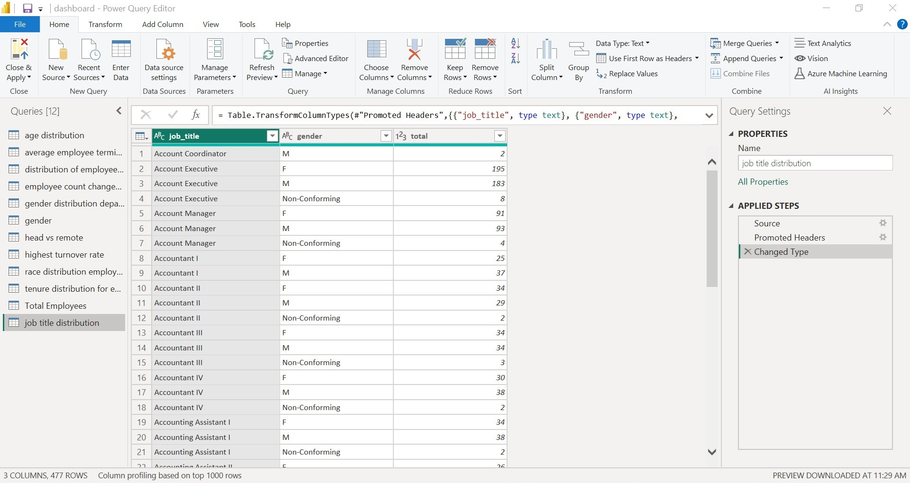
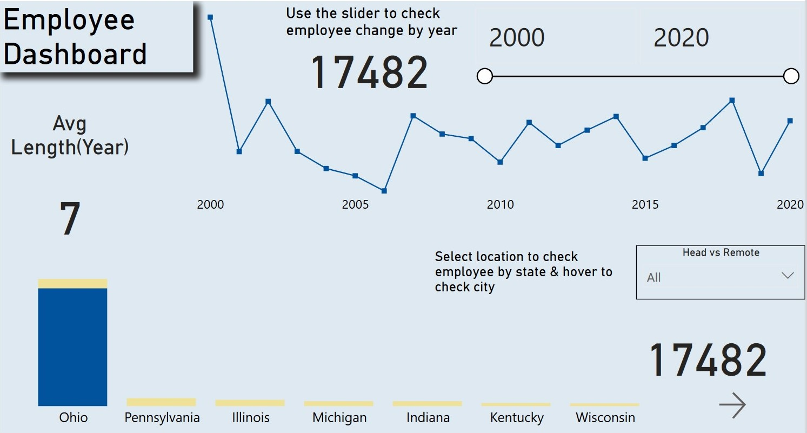
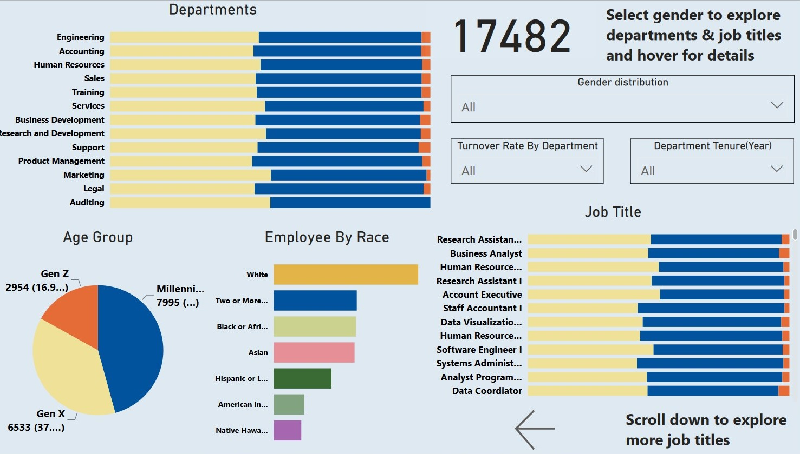

HR Analytics Dashboard: Analyzing Employee Churn
Goal
The HR Analytics Dashboard project aims to identify the factors contributing to employee churn and provide actionable insights to reduce employee turnover rate, improve employee retention, and enhance overall organizational performance.
Download from GitHub!Background Information
The dataset includes information about employees in the company. It contains various attributes such as the employee's id, gender, job role, first name, last name, and department. Other information in the dataset includes the employee's race, location city/sate, hire date, termination date, location(head quarter/remote), and birth date. Additionally, the dataset includes a column termdate(termination date), the blanks shows that an employee is still employed and dates represents termination dates .
Setup
The first step in the project involved data cleaning to ensure accurate analysis. This included removing any duplicate entries to avoid potential biases in the dataset. To facilitate better visualization of the data, missing values in the termdate column were replaced by 0, because they represent that the employees are still working. Furthermore, I verified that there was no missing data and that each field had the correct data type using Power BI's query tool.
These steps were essential to ensure that the data was properly formatted for analysis and would yield accurate results.
Dashboard Design and Creation.
With the processed data, Created a dynamic Employee dashboard that presents key insights on employee attrition. The dashboard includes line chart, stacked column chart, stacked bar chart, donut chart showing number of employees by year, avg lenght of an employee, employees working head quarter or remote, and gender wise distribution by departments and much more, providing a comprehensive view of factors contributing to attrition within the company. These visualizations can help inform HR decision-making and guide targeted efforts to reduce attrition and retain valuable employees.
 In addition to creating the charts mentioned earlier, I also added slicers and filters to the HR analytics dashboard. These slicers and filters made the dashboard more dynamic and interactive user experience, allowing the user to explore the data in greater detail and gain deeper insights.
Conclusion
The HR analytics dashboard created using Power BI is a powerful tool for making informed decisions about employee attrition. It demonstrates my skills in data analysis and visualization. The skills I have acquired in this project can be applied to various industries and domains, helping organizations make data-driven decisions and achieve their goals.